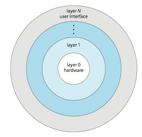

Operating System Concepts 2 - Operating System structures
- Operating system service
- User Interface
- System call
- System Service
- OS Design and Implementation
- Operating system structure
- System boot
Operating system service
The figure below is a view of the various operating-system services and how they interrelate.

User Interface
There're mainly three ways for users to interface with the operating system:
- command interpreter
- graphical user interface
- touch-screen interface
System call
Purpose of System Call: System calls provide an interface to the services made available by an operating system.
API
Typically, application developers design programs according to an application programming interface(API, 应用程序编程接口) rather than invoking actual system call.
- because even simple program may make heavy use of system call.
- program portability: expect programs to compile and run other system that supports the same API
- run-time environment(RTE, 运行时环境) - the full suit of software needed to execute applications, including its compilers, interpreters, libraries, loaders.
Types of system calls
System calls can be grouped roughly into six major categories:
系统调用可分成六大类：进程控制，文件管理，设备管理，信息维护，通信和保护。
- process control
- file management
- device management
- information maintenance
- communications
- protection

Three ways to pass parameters to the operating system:
- when less than five parameters, passing the parameters in registers
- when more than five parameters, parameters are stored in a block, passing the address of the block in a register
- using stack
System Service
System services, also known as system utilities, provide a convenient environment for program development and execution.
OS Design and Implementation
One important principle of OS design is the separation of policy from mechanism . Mechanisms determine how to do something; policies determine what will be done.
操作系统设计的一个重要原则是策略（policy）和机制（mechanism）的分离。机制决定如何做，策略决定做什么。
- The separation of policy and mechanism is important for flexibility.
Operating system structure
Monolithic structure
Operating systems with monolithic structure (单体结构) place all of the functionality of kernel into a single, static binary file that runs in a single address space.
- a common technique for designing operating system
- e.g. original Unix operating system ( figure below)

- e.g. Linux is based on Unix and is structured similarly, as shown in figure below.

pros
- simplicity of kernels
- a distinct performance advantage
- very little overhead in the system-call interface
- fast communication within the kernel
cons
- difficult to implement and extend
Layered
A loosely coupled (松耦合) system is divided into separate, smaller components that have specific and limited functionality (modular approach). All these components together comprise the kernel .
- changes in one component affect only that component
A system can be made modular in many ways.
- one way is the layered approach.
For the layered operating system (层次式操作系统), it is broken into a number of layers.
- The bottom layer is the hardware; the highest is the user interface.
- low-level layers can be invoked by higher-level layers
pros
- simplicity of construction and debugging
- each layer is implemented only with operations provided by lower-level layers.
- higher-level layers can be debugged without any concern for the lower-level layers
cons
- difficulty of defining the functionality of each layer
- poor performance
- overhead of requiring a user program to traverse through multiple layers to obtain an operating-system service
Used in computer networks and web applications

Microkernel
Another way to modularized the kernel is using microkernel approach (微内核)。
- removing all nonessential components from the kernel and implementing them as user-level programs the reside in separate address spaces.
- smaller kernel
A typical microkernel shown below.

pros
- easy to extend the os
- all new services added to user space do not require modification of the kernel.
- when modification of kernel needed, changes tend to be fewer because of small kernel
- more security and reliability
- since most services are running as user
cons
- performance may suffer due to increased system function overhead.
- messages of user-level services to communicate must be copied between the services.
Best-known microkernel os is Darwin, the kernel component of the macOS and iOS.
Modules
Perhaps the best current methodology for operating system design involves using loadable kernel modules(LVMs, 可装载内核模块). Here, the kernel has a set of core components and can link in additional services via modules, either at boot time or during run time.
- design purpose: for the kernel to provide core services, while other services are implemented dynamically, as the kernel is running
Hybrid systems
In practice, very few operating system adopt a single, strictly defined structure. Instead, they combine different structures
, resulting in hybrid systems that address performance, security, and usability issues.
Architecture of Apple’s macOS and iOS operating systems:

Darwin provides two system-call interfaces: Mach system calls and BSD system calls.
The structure of Darwin:

To address such performance problems, Darwin combines Mach, BSD, the I/O kit, and any kernel extensions into a single address space.
detailed documents for Darwin kernel
System boot
The process of starting a computer by loading the kernel is known as booting the system.
- A small piece of code known as the bootstrap program（引导程序） or boot loader locates the kernel.
- The kernel is loaded into memory and started.
- The kernel initializes hardware.
- The root file system is mounted.
bootstrap program:
Operating System Concepts 1 - Introduction
- what operating system do
- Computer-system organisation
- Interrupt
- multiprogramming and multitasking
- dual-mode
- timer
- virtualization
- Free and Open-Source OS
what operating system do
There is no completely adequate definition of operating system. A simple viewpoint is that it includes everything a vendor ships. A more common definition is that the operating system is the one program running at all times on computer - usually called kernel .
Three main purposes of an operating system are,
- manages a computer's hardware
- provides a basis for application programs
- acts as an intermediary between the user and hardware
The operating system includes the always running kernel, middleware frameworks that ease application development and provide features, and system programs that aid in managing the system while it is running.
Anything between the kernel and user applications is considered middleware(中间件) [1].
Computer-system organisation
A computer system can be divided roughly into four components: the hardware, the operating system, the application programs, and a user.

A computer system(计算机系统) consists of one or more CPUs and a number of device controllers(设备控制器) connected through a common bus(总线) that provides access between components and shared memory.
A device controller maintains some local buffer storage(局部缓冲存储) and a set of special-purpose registers.
Typically, operating systems have a device driver(设备驱动) for each device controller. This device driver understands the device controller and provides the rest of the operating system with a uniform interface to the device

Interrupt
When the CPU is interrupted, it stops what it is doing and immediately transfers execution to a fixed location. The fixed location usually contains the starting address where the service routine for the interrupt is located.
The interrupt routine(中断程序) is called indirectly through the interrupt vector table（中断向量表).
- Generally, the table of pointers is stored in low memory (the first hundred or so locations).
- These locations hold the addresses of the interrupt service routines for the various devices.
- Interrupt vector is then indexed by a unique number(interrupt vector number, 中断向量号)
- interrupt priority levels(中断优先级)

Some services are provided outside of the kernel by system programs that are loaded into memory at boot time to become system daemons, which run the entire time the kernel is running.

interrupt, exception, trap
Unfortunately, there is no clear consensus as to the exact meaning of these terms(exceptions, faults, aborts, traps, and interrupts). Different authors adopt different terms to their own use [ref].
trap(陷阱) or exception(异常): a software-generated interrupt either by an error（e.g. division by zero, or invalid memory access or by a system call.
- usual way to invoke a kernel routine (a system call)
interrupt(中断): generated by the hardware (devices like the hard disk, graphics card, I/O ports, etc).
multiprogramming and multitasking
Multiprogramming(多道程序) explained:
- The operating system keeps several processes in memory simultaneously.
- The operating system picks and begins to execute one of these processes.
- Eventually, the process may have to wait for some task, such as an I/O operation, to complete.
- When that process needs to wait, the CPU switches to another process, and so on.
- Eventually, the first process finishes waiting and gets the CPU back. As long as at least one process needs to execute, the CPU is never idle.
Multitasking(多任务) is a logical extension of multiprogramming. In multitasking systems, the CPU executes multiple processes by switching among them, but the switches occur frequently, providing the user with a fast response time.
dual-mode
In order to ensure the proper execution of the system, we must be able to distinguish between the execution of operating-system code（kernel mode）and user-defined code (user mode).

Mode bit(模式位), is added to the hardware of the computer to indicate the current mode: kernel (0) or user (1).
The concept of modes can be extended beyond two modes.
protection rings（保护环) are mechanisms to protect data and functionality from faults (by improving fault tolerance) and malicious behavior (by providing computer security).
For intel processors, ring 0 is kernel mode and ring 3 is user mode

timer
A timer (定时器) can be set to interrupt the computer after a specified period( usually, 100s hz)
- A variable timer is generally implemented by a fixed-rate clock and a counter.
- The operating system sets the counter. Every time the clock ticks, the counter is decremented.
- When the counter reaches 0, an interrupt occurs.
virtualization
virtualization(虚拟化) is a technology that allows us to abstract the hardware of a single computer into several different execution environments, thereby creating the illusion that each separate environment is running on its own private computer .
- v.s. [different] Emulation involves simulating computer handware in software.

Free and Open-Source OS
Open-source OS
- source code available
- opposite: closed-source OS
Free OS
- source code available
- allow no-cost use, redistribution, and modification
Arguably, open-source code is more secure than closed-source code because many more eyes are viewing the code.
e.g. OS
- GNU/Linux
- FreeBSD
- Solaris

Copyright © 2015 Powered by MWeb, Theme used GitHub CSS.